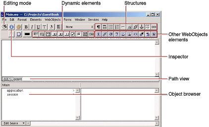
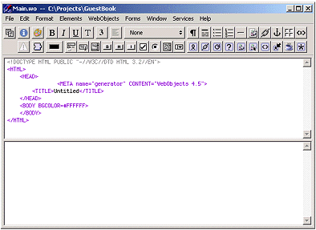

| PATH |

Now that you've created your project, you'll edit the Main component with WebObjects Builder.
Main.wo in
the second column.The WebObjects Builder tool launches and
displays a window titled Main.wo.
This represents your application's Main component.

You create your component graphically
in the upper pane of the component window. The browser at the bottom
of the window (known as the object browser)
is used to display variables and methods your component uses. Note
that there are two variables already defined, application and session.
You'll create others later.
The path view lies between the upper pane and the object browser and shows the element path to the selected element. Any element can be contained in a hierarchy of several levels of elements and can in turn contain other elements. Here, the path view shows the page element, which is the top level of the hierarchy. By clicking the tags in the path view, you can easily choose different elements in the hierarchy.
The toolbar at the top of the window contains several buttons that allow you to create the content of your component. WebObjects Builder also has menu commands corresponding to these buttons.
pop-up list at the left of the toolbar, choose
.
This pop-up list allows
you to switch between graphical editing mode and source editing
mode. When you choose source editing mode, the text of your HTML
template (Main.html)
appears. It is a skeleton at this point, since the page is empty.
As you add elements graphically, their corresponding HTML tags appear
in this file.

The
bottom pane shows your declarations (Main.wod)
file. Later, when you bind variables to your dynamic elements, this
file stores the information. Normally, you do not type directly
in this file. You can add elements using the toolbar in either source
or graphical editing mode.
© 2001 Apple Computer, Inc.